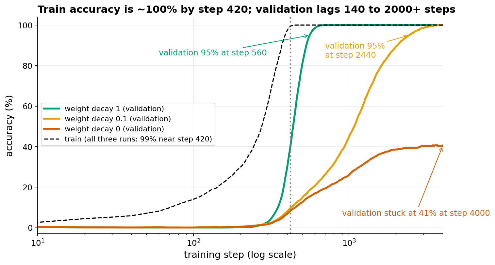
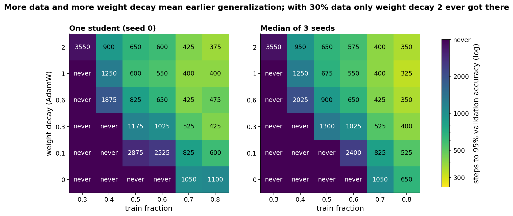
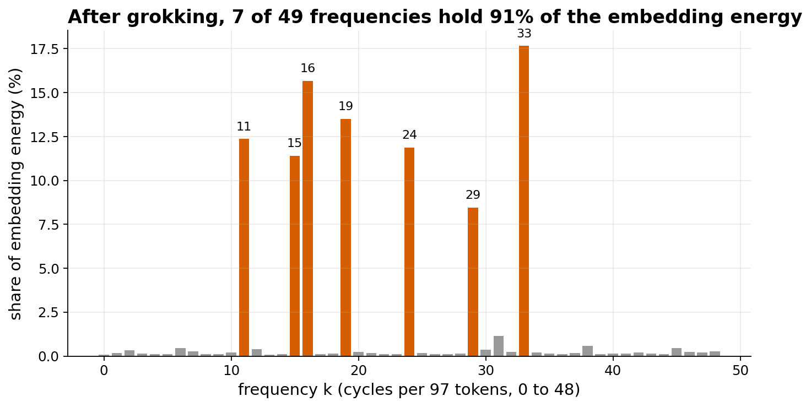

Grokking
Extends the generalization themes (Lab 2), next to Class ensemble and Adversarial examples.
The idea
The task is modular addition: given two numbers a and b between 0 and 96, predict (a + b) mod 97. There are 97 x 97 = 9409 possible pairs. We train on a random fraction of them (the train fraction) and measure accuracy on the rest (the validation set).
A small network (an embedding of size 32 for each number, one hidden layer of 64 ReLU units, 97 output logits) learns the training pairs fast. Train accuracy is about 100% after roughly 400 steps. Validation accuracy stays near 0% (chance is about 1%). If training continues, validation accuracy can later jump to 100%. This late jump is called grokking. It was reported by Power et al. (2022) on small algorithmic tasks.
It is surprising because the usual advice is to stop training once validation stops improving. In our run with weight decay 0.1, stopping at step 500 (validation 15%) would have missed the generalization completely: validation passes 95% only at step 2440. It is useful in class because it separates two things that usually happen together: fitting the training data and generalizing.
What is established:
- Grokking happens on small algorithmic datasets, and it depends strongly on weight decay and on how much data is used (Power et al. 2022; our grid shows the same).
- For modular addition, the trained network uses a few frequencies. It represents each number by sines and cosines at a handful of frequencies and adds angles (Nanda et al. 2023, which reverse-engineered the network). Our embedding shows this: 7 of 49 frequencies hold 91% of its energy.
What is still debated: the general explanation. One account (Nanda et al.) says the network learns a memorizing solution and a generalizing solution in parallel; weight decay slowly favors the generalizing one because it is smaller in weight norm, and validation accuracy rises when the memorizing part is removed. Other work ties it to the size of the weights (Liu et al. 2022 explain it through the weight norm and also produce it on MNIST with a large initialization), or to how much data is available. We do not claim any of these is the full story, and we did not test them here.
Course link: Goodfellow chapter 7 (regularization): weight decay is an L2 penalty on the weights, and here it decides whether the network generalizes at all. Chapter 8 (optimization): training loss reaches near zero long before validation improves, so the training loss tells you nothing about generalization. Chapter 6: the network is a plain feedforward network with an embedding layer.
- Power, Burda, Edwards, Babuschkin, Misra, 2022: Grokking: Generalization Beyond Overfitting on Small Algorithmic Datasets
- Nanda, Chan, Lieberum, Smith, Steinhardt, 2023: Progress measures for grokking via mechanistic interpretability
- Liu, Michaud, Tegmark, 2022: Omnigrok: Grokking Beyond Algorithmic Data
What students would do
- Guided notebook: build the (a + b) mod 97 dataset and split it; define the small MLP; train with AdamW (learning rate 3e-3, full batch, 4000 steps maximum); plot train and validation accuracy against step with a log x axis.
- Each student first runs the default cell and sees train accuracy reach 100% while validation stays near 0%.
- Class experiment: each student runs a few cells of a grid: 6 weight-decay values (0, 0.1, 0.3, 0.6, 1, 2) times 6 train fractions (0.3, 0.4, 0.5, 0.6, 0.7, 0.8). They run them and report the result (steps until validation accuracy reaches 95%, or "never").
- The class plot is the 6 x 6 grid, filled in as results arrive. With several students per cell and different seeds, show the median.
Discussion questions:
- Why is validation accuracy near 0% when train accuracy is already 100%?
- Why does more weight decay make validation accuracy rise sooner?
- Why does more training data help, and why does weight decay 0 fail up to 60% data?
- If you had early-stopped on validation loss, what would you have concluded?
What our prototype found
Curves for one seed (seed 0), training for the full 4000 steps without early stopping. This is a re-run on CPU with the prototype's own code, because the original curves were not saved.



| Quantity | Value |
|---|---|
| Train accuracy reaches 99% (wd 1, frac 0.5, seed 0) | step 420 |
| Validation reaches 95% / 99% (same run) | step 560 / 620 |
| wd 0.1, frac 0.5, seed 0 (re-run): 95% / 99% | step 2440 / 3120 |
| wd 0, frac 0.5: validation at step 4000 | 41% |
| Fastest grid cell (median of 3 seeds) | 325 steps (wd 1, frac 0.8) |
| Fourier peaks | 7 of 49 frequencies, 91% of energy |